景福宮/桃園縣
台湾大佛列伝4、修行の旅もいよいよ大詰めである。
本来であれば桃園縣周辺のあれやこれやを見に行く予定だったのだが、台風が本格的に直撃してしまい、これ以上何処にも行けそうにないので街中で昼食を済ませてホテルに逃げ込もうという算段。
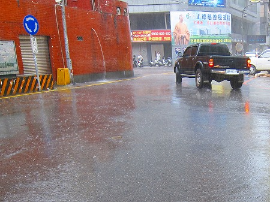
傘など何の役にも立たないレベルの豪雨。やっぱ南国の台風は凄いねえ。
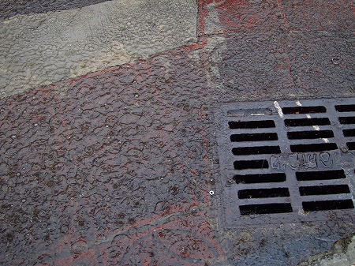
次から次へと店が閉まっていく。
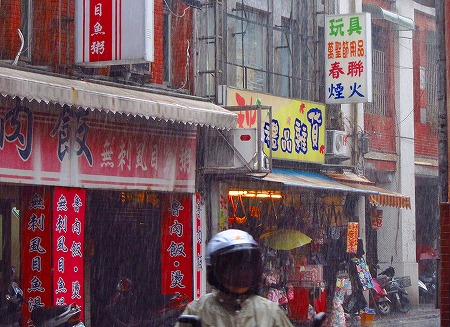
ところがこの日は台湾のお盆に相当する時期（鬼月という）で、あちこちの商店で供物が山のように積まれ、祭文のような紙がバンバン燃やされていた。
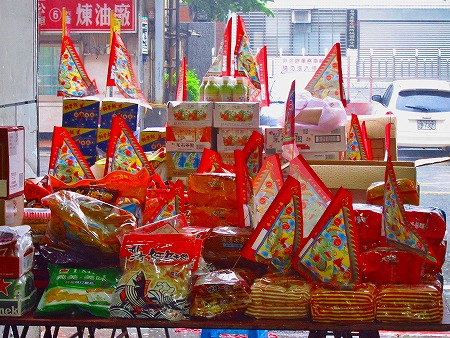
これは日本で言うところの施餓鬼供養のようなものだろう。
普段は伝統習俗に縁のなさそうな電脳ショップなどでも盛大に供え物を店先に並べ、豪雨の中、じゃんじゃん燃やしていた。
豪雨と強風の中で燃え上がる火柱、そしてお構いなしの大量の煙。
皆さんほとんどヤケクソで、街全体が軽くパニック状態になってました…。
そんな騒乱の駅前通りを直進していくと景福宮という寺院に突き当たる。
ホテルはすぐ近くなので、最後の修行と思って寄ってみる事にした。
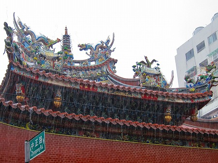
駅前通の突き当たり、という立地条件からしてこの街では特別な道教寺院なのであろう。
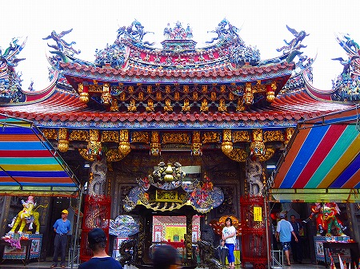
本殿前の広場は普段は公園のように憩いの場なのだろうが、この日ばかりは様子が違う。
広場にはみっしりとカラフルなテントが張られている。
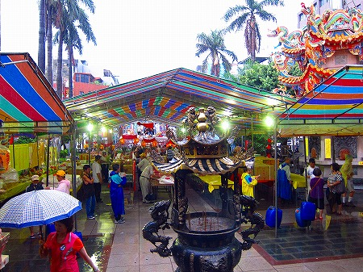
そう、ここでも鬼月の拝拝が行われているのだ。
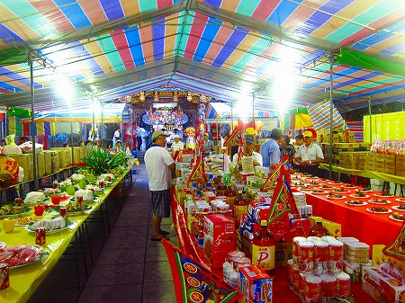
テントの中には机が並べられており、そこにはズラリと皿が並んでいる。
先祖への供物なのだろう。
それにしても昼なのにまるで夜みたいになってきちゃったぞ。
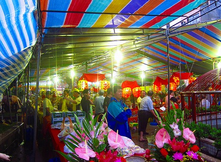
一歩外は台風直撃の阿鼻叫喚状態なのだが、テントの中は中でご先祖供養モード全開の方々の熱気が渦巻いている。
その熱気に圧されてテントの隅に移動したら…
おっとお！
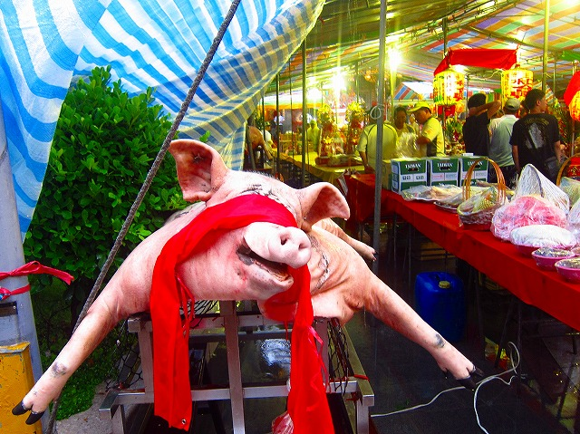
供物の豚さんじゃないですかあ。
道教世界では豚の供え物は必須アイテム。
昨今首だけというのがトレンドだが、道教の伝統と習俗が色濃く残る台湾では全身奉納がデフォルトみたい。
目隠しなのだろうか。赤い布が顔にかかっていた。
そしてテントの端にいるのでずぶ濡れだった。
こういう光景をみると食と信仰って不可分なジャンルなのだなあ、とつくづく思う。
とりあえずテント部分はあとでじっくり見るとして本堂にご挨拶。
入り口には紙細工のカミサマたちがズラリとお出迎え。
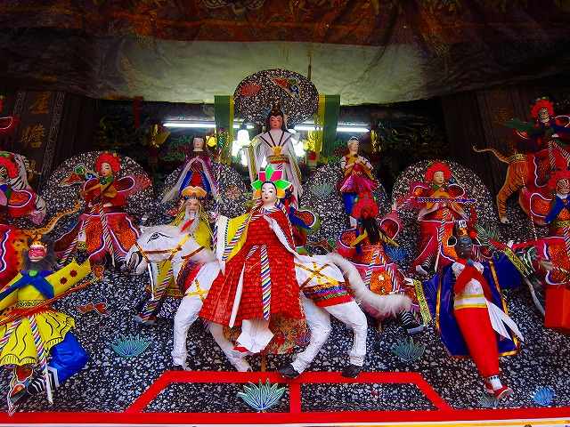
入り口の左右にも勇ましいカミサマが。もちろんこちらも紙細工。
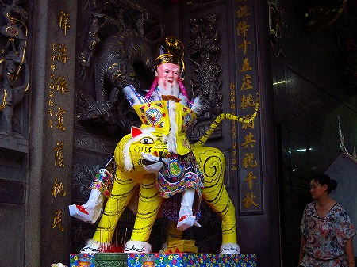
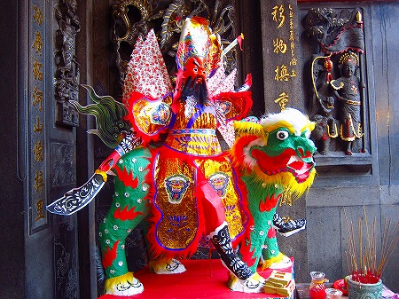
中に入ると外の喧騒がウソのよう。
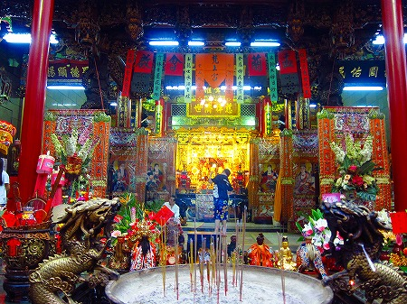
ひっそりとしていて台風すらもどこふく風。
こちらは紙の神殿。
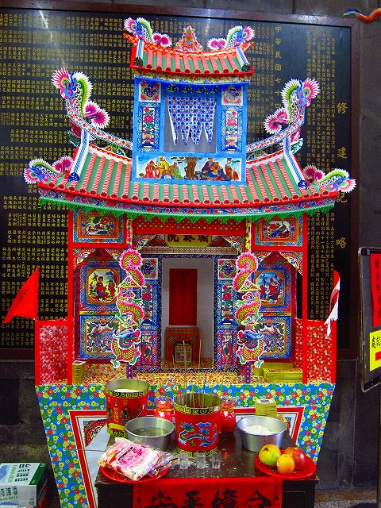
もちろんこれも最後には燃やされてしまうのであろう。勿体ない。
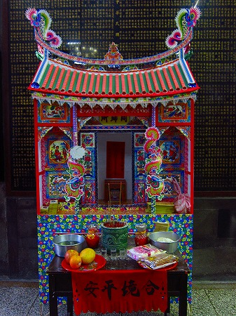
沐浴亭とある。男女別なんだ。
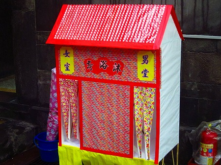
ああ、そういえば京都の万福寺でも同じように浴槽がしつらえてある冥宅があったぞ！これの亜種なのか！今わかった。
さて、テントの方に移動しようか。
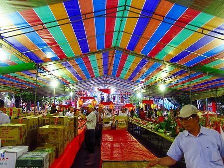
雨が激しくなってきたので一部雨漏りしてしまい、所々供物を避難させている。
それにしても次から次へと供物が運ばれてくるなあ。
ダンボールに入った食料品が多いみたい。
そしてズラリと並んだ美味そうなご馳走…
？？？
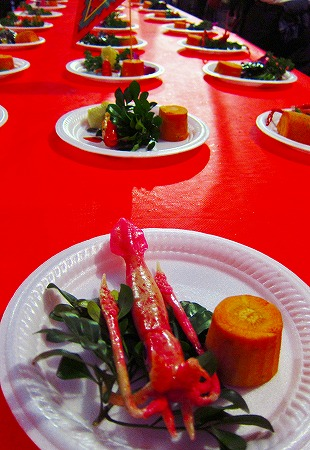
コレ、ホンモノじゃない！
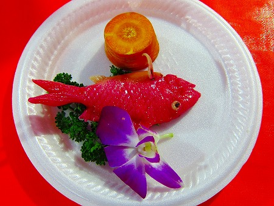
妙にツヤツヤしているところを見るとロウ細工なのだろうか。
それとも日本で言うところの練り物の鯛的なヤツなのだろうか。
いずれにせよ細工自体はかなり精巧だ。
中にはファンシーな供物も。
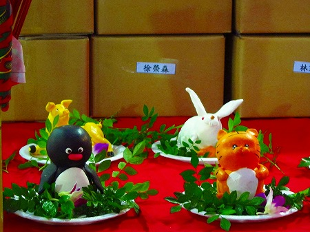
さらに死者の宴は続く。
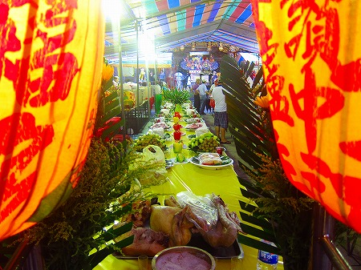
こちらはキャラクターがずらり。しかし版権とか…。まあ、いいか。すぐに無くなっちゃうんだし。
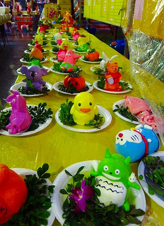
この辺はカラー粘土かも。
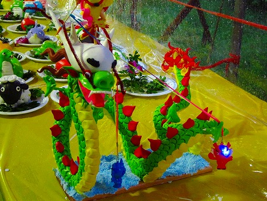
それにしてもよく出来ているなあ。
お土産にいくつかもらって行きたい位だが、死者への供物は持って帰ってはいけないことになっているのだ。
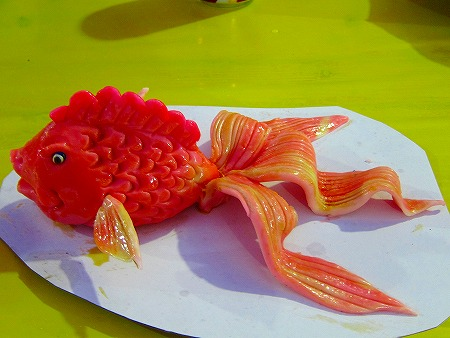
虎とキウイ。シュールな世界が紙皿の上で展開されている。
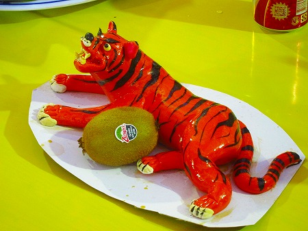
観葉植物の葉とブロッコリを組み合わせた前衛生け花のような作品。
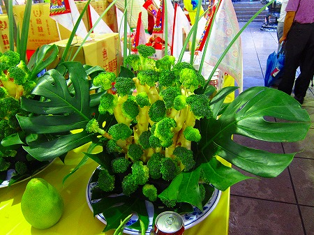
またまた出ました。ブーやん。
今度は顔をマジックで書かれちゃってら。
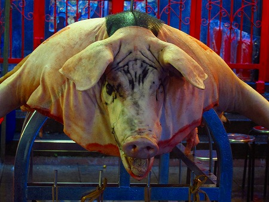
さらにその下には
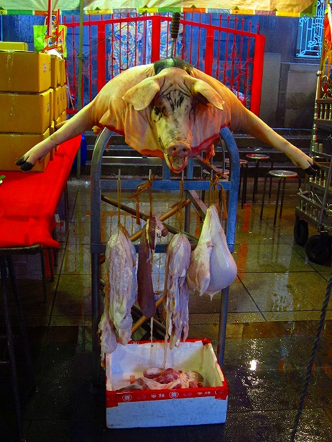
臓物まで一緒に奉納されてました。
そこまでするのか！と驚いたが、まあ命は無駄なく使い切りましょう、ということだな、これは。
会場には次々と豚が運び込まれてくる。
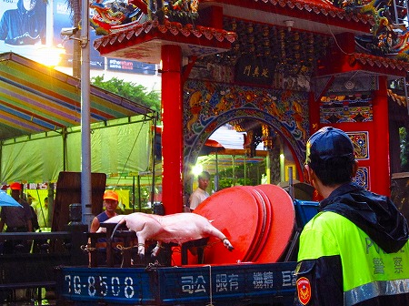
背中にコロコロスタンプのような焼印を捺されていた。
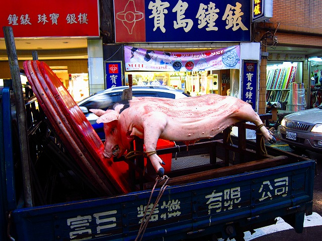
豪雨の街中を豚が闊歩する。
空想映画のような光景だった。
というわけで最早屋外にいること自体が危険なので早々に宿に戻って昼酒します。
…毎度のことだが大抵旅の終わりなんてこんなもんである。
海の向こうに綺麗な虹が見えたり、現地のジジイが物凄く哲学的なことを言ったり、うっかり解脱しちゃったり…そんなことはなく、空港の近くでドタバタしているのがほとんどである。
恐らく大したことでは感動しなくなってしまっている自分自身の資質の問題のような気もするし、でもやっぱりそんな上手い具合に旅の最後なんて締まらないよなあ、と思ってる節もあるし。
…まあ、そんなわけでいつも以上にグダグダな状態で恐縮ですが…再見！ということで。